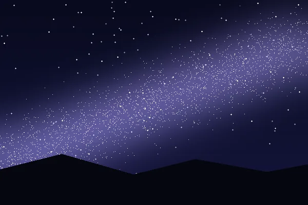
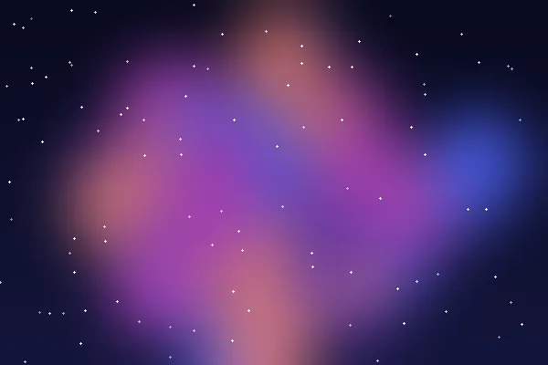
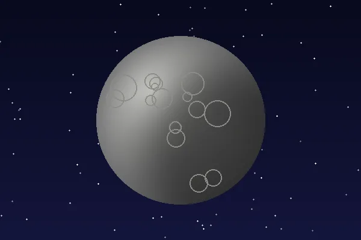
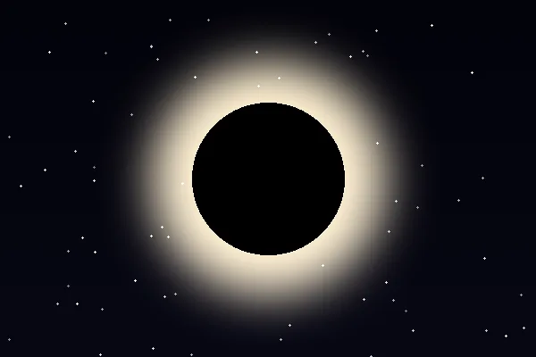
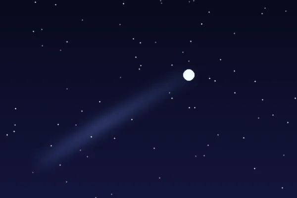
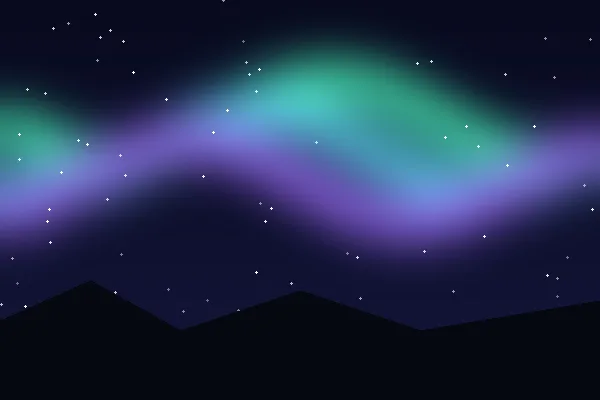
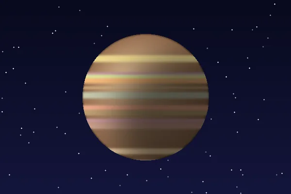

Galería del cielo
Una selección de ilustraciones de lo que puedes ver en nuestras sesiones: planetas, la Luna, nebulosas y fenómenos que ocurren en el cielo.
Ilustraciones









¿Qué es cada cosa?
- Nebulosa: una nube enorme de gas y polvo donde nacen nuevas estrellas.
- Cometa: una bola de hielo y polvo que, al acercarse al Sol, se calienta y forma una cola.
- Eclipse de Sol: ocurre cuando la Luna se pone justo delante del Sol y lo tapa.
- Aurora boreal: luces de colores que aparecen cerca de los polos cuando las partículas del Sol chocan con el aire.